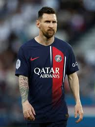
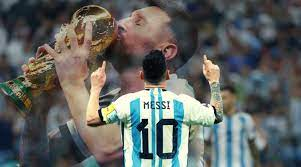
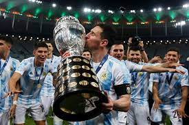

|
|
Major ACHIEVEMENTS
- Fifa world cup
- Copa america
- finalissima winner
- Olympic gold medalist
- Ucl winner
- La liga winner
- copa del rey winner
- Joan gampher trophy
- club world cup
- super cup
- and many more...
Some Major personal Achievements
- 8xballon dor
- highest no of goals in a calender year
- 3X THE BEST FIFA MEN'S PLAYER
- 10X PLAYER OF THE YEAR
- 4X TM-PLAYER OF THE SEASON
- golden boot
- and many more...
Clubs he played for
- Newells old boys
- FC barcelona
- Paris Saint German
- Inter Maimi FC
In order.
Club Success
.jpeg)
.jpeg)
In 2003 he joined FCB ,competing in top teir of spanish football.
At the age of 17 , he became youngest player in la liga.After 5
years he became one of the dominants footballer on the planet.
2009 came with milestones unlocking for him ,as he won treble.
He continued to grow with FCB winning many cups and trophies.
finally FCB and messi seperated apart in 2021. He joined Psg
where he became french champion.In 2023 he latter joined MLS club
Inter Maimi.
The ARGENTINA Story
 
He started his argentina career in 2005.HE was famous for his dribbling skills.
In 2008 he won olympic gold medal deafting Nigeria in finals.In senior team he
gained a permanent spot.He featured in world cup for very fist time in year 2006.
He has played total of 5 world cups.The journey with his national team started
getting bad.He was targeted after every loss.People argued that he never play with
full potential as he did in Spain with his club . After continous defeat in copa
america finals and 2014 world cup final he announced his national retirement in
2016. Then he came back in 2018 world cup which he again lost.After so many defaets
he came back with streak of wins . He was heavily critised and abused in Argentina
.He continued working hard and won 2021 copa world cup, 2021 finalissima and the
greatest trophy FIFA WORLD CUP in 2022 hosted by Qatar.